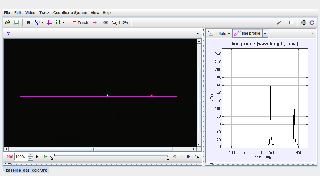

Tracker Experiment
This is the spectrum of two HeNe lasers: one is red (632.8 nm) and the other is green (543.5 nm). These laser spots are included in all spectra for calibration purposes. The lasers are illuminating a white sheet of paper, and the camera is recording the reflected light.
Note the two sharp peaks, called lines, in the spectrum--one for each laser. You will use these known wavelengths to calibrate the wavelength scale using a pair of calibration points.
Analysis:
- If the calibration points are not visible, click the Calibration tools button on the toolbar to display them.
- Select either calibration point to display both world positions on the toolbar. Check that both calibration points are centered on the laser lines and have the correct wavelengths. Zoom in to look closely.
- Zoom back out, move the line profile up and down and observe the change in the data.
- Shorten the line profile by dragging one end to "zoom in" on a single laser line.
- Describe and sketch the shape of the red laser line. What is the width of the line (in nm) at half its peak brightness? What is the uncertainty in the width? What is the principle source of this uncertainty?
- Study the green laser line. Is its width at half max significantly different than that of the red line?
Author: Douglas Brown
Contact: dobrown@cabrillo.edu